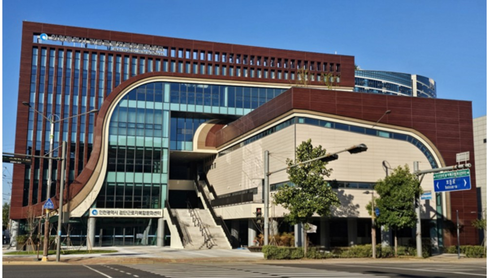

검단 근로자복합문화센터 문 열어…월 1만원 강좌, 평일 밤 9시까지
213억원 들여 검단구 오류동에, 외국인 노동자 한국어 교육도
토요일은 대관만·일요일 휴관, 주차 21면이 숙제
AI경제저널=김갑봉 기자 | 인천 서북부 산업단지 노동자와 주민이 쓰는 문화·복지 시설이 문을 열었다. 인천시는 4일 검단구 오류동에서 「검단 근로자복합문화센터」 개관식을 열었다. 이달 단기강좌 19개를 시범 운영하고, 2027년부터 42개 강좌로 늘린다.
수강료는 월 1만원 또는 1만5000원이다. 재료비와 교재비는 따로 낸다. 인천 사업장에서 일하는 만 19세 이상 노동자와 가족, 인천 시민이 신청할 수 있다. 12월 강좌 접수는 11월 23일부터 27일까지 인천시설공단 통합예약 누리집에서 받는다.

213억원, 지상 5층에 강의실·공방·도서쉼터
센터는 총사업비 213억원을 들여 지하 1층, 지상 5층으로 지었다. 연면적은 4495㎡다. 1층에 어학실, 2층에 양재실·다목적강당·컴퓨터실이 있다. 3층은 공용부엌·무용실·음악실, 4층은 미술실·도예실·전시공간이다. 5층에는 도서쉼터와 회의실을 뒀다.
강좌는 영어회화, 한국어, 생성형 인공지능(AI) 활용, 캘리그라피, 생활도자기 등이다. 요가·필라테스·탁구 같은 생활체육도 연다. 가족 단위 문화·체험 활동도 차츰 늘린다. 교육실과 회의실은 지역 단체에 빌려준다.
가좌 이어 두 번째…1984년 문화센터의 뒤를 잇다
인천의 근로자복합문화센터는 이번이 두 번째다. 첫 센터는 2025년 11월 26일 서구(지금 서해구) 가좌동에 문을 열었다. 1984년부터 2021년까지 운영한 옛 근로자문화센터를 대신한 시설이다. 가좌 센터에는 187억원이 들었고 연면적은 5131㎡다.
두 센터 모두 인천시설공단이 운영한다. 검단 센터는 검단산업단지를 비롯한 서북부 노동자와 주민을 위해 지었다. 서북부에 노동자 문화·복지 시설이 모자랐다는 것이 인천시 설명이다.
검단 센터가 서북부 노동자에게 말하는 것
첫째, 일하는 시간과 여는 시간이 겹친다. 센터는 평일 오전 9시부터 밤 9시까지 연다. 토요일은 대관만 하고 일요일과 공휴일은 쉰다. 낮에 일하는 노동자는 퇴근 뒤 저녁 강좌만 들을 수 있다. 교대 근무자나 주말에 쉬는 노동자가 쓸 틈은 좁다.
둘째, 문턱은 낮다. 수강료는 월 1만~1만5000원이고 국가유공자, 장애인, 기초생활 수급권자, 한부모가족 등은 50%를 감면받는다. 산업재해보상보험법 시행령에 따른 일용직 노동자도 감면 대상이다. 인천 사업장에서 일하면 사는 곳이 인천이 아니어도 신청할 수 있다.
셋째, 외국인 노동자에게 몫이 생긴다. 다만 인천시는 외국인 노동자 한국어 교육과 직무역량 강좌를 「단계적으로」 늘린다고만 밝혔다. 2027년 정규 과정 37개 안에 한국어 강좌가 몇 개나 들어가는지가 관건이다.
넷째, 건립비는 더 들었다. 검단은 가좌보다 연면적이 636㎡ 작지만 사업비는 26억원 많다. 총사업비를 연면적으로 나누면 1㎡에 검단은 약 474만원, 가좌는 약 364만원이다(AI경제저널 계산). 같은 돈으로 지을 수 있는 노동자 시설의 넓이가 그만큼 줄었다는 얘기다.
다섯째, 주차가 숙제다. 지하 주차장은 21면이다. 공단은 안내문에서 주차장이 매우 협소하니 대중교통을 이용하라고 알렸다. 인천2호선 검단오류역에서 버스로 갈아타야 한다. 차로 출퇴근하는 산단 노동자에게는 불편한 대목이다.
이용하려면
센터 주소는 인천 검단구 보듬로 140이다. 수강 신청은 인천시설공단 통합예약(reserve.insiseol.or.kr)에서 선착순으로 받는다. 개관식에는 김성중 행정부시장과 시의원, 노동조합 관계자, 주민 등 100여명이 참석했다.
김성중 행정부시장은 이 자리에서 노동자에게는 지친 일상에서 힘을 얻는 쉼터, 시민에게는 배움과 문화생활의 기회를 넓히는 공간이 되도록 하겠다고 말했다. 인천시는 일과 삶이 균형을 이루는 노동 친화적 도시 환경을 만들겠다고 밝혔다.
참고문헌
- 인천광역시 노동정책과(2026). 인천시, '검단 근로자복합문화센터' 개관, 서북부 문화·복지 거점 마련(보도자료). 2026년 11월 4일. https://www.incheon.go.kr/IC010205/view?repSeq=DOM_0000000015896307
- 인천광역시 노동정책과(2026). (참고자료) 검단 근로자복합문화센터 시설 개요·홍보 시안. 2026년 11월 4일 보도자료 붙임.
- 인천광역시 노동정책과(2025). 인천시, '가좌 근로자복합문화센터' 개관 근로자·시민 위한 새 문화 허브 탄생(보도자료). 2025년 11월 26일. https://www.incheon.go.kr/IC010205/view?repSeq=DOM_0000000013613789
- 인천시설공단. 검단근로자복합문화센터 수강생 모집(수강료 감면 대상 포함). https://www.insiseol.or.kr/culture/gumdan/recruitment.jsp
- 인천시설공단. 통합예약. https://reserve.insiseol.or.kr
[사진 출처]
- [사진1] 인천광역시 보도자료 「인천시, '검단 근로자복합문화센터' 개관」 참고자료 전경사진, 공공누리 출처표시, 2026.11.4., https://www.incheon.go.kr/IC010205/view?repSeq=DOM_0000000015896307
관련기사
- 노동교육 필요하다 71.6%…의무교육 빼면 받아 본 사람 8.8%
- 청년 많이 일하는 100곳, 장시간 노동·공짜 야근 감독 받는다
- 청라 영상단지 준공 2031년으로 4년 늦춰…IFEZ, 콘텐츠·바이오로 판 짠다
저작권자 © AI경제저널 무단전재 및 재배포, AI학습 및 활용 금지